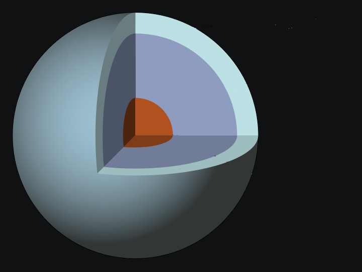

Key Facts & Summary

- Uranus turns on its axis once every 17 hours, 14 minutes.
- Uranus makes one trip around the Sun every 84 Earth years.
- Uranus is often referred to as an “ice giant” planet.
- Uranus hits the coldest temperatures of any planet.
- Uranus has two sets of very thin dark coloured rings.
- Uranus’ moons are named after characters created by William Shakespeare and Alexander Pope.
- Only one spacecraft has flown by Uranus.
Orbit
It takes Uranus about 7 years to pass through each zodiac constellation, and a total of 84 years to make a complete trip around the sun.The interior rotation of Uranus is completed in about 17 hours, 14 minutes, and as in the case of all the gas giants its upper atmosphere experiences strong winds in the direction of rotation thus making a full rotation faster, in about 14 hours.
Rotation
The axis of rotation is approximately parallel with the plane of the Solar System, with a tilt of 97.77°. This feature gives Uranus completely different seasonal changes unlike those of other planets.
STRUCTURE
The standard model structure of Uranus consists of three layers: a rocky silicate/iron-nickel core in the center, an icy mantle in the middle and an outer gaseous hydrogen/helium envelope.The core’s mass is estimated to be about 0.55% Earth masses with a radius less than 20% of the whole of Uranus.
The mantle comprises its bulk, with around 13.4 Earth masses. The upper atmosphere is relatively insubstantial, weighing about 0.5 Earth masses and expanding for the last 20% of Uranus’s radius. The core density is around 9 g/cm3, with a pressure in the middle of about 8 million bars, and a temperature of about 5.000 K. What is referred to as the ice mantle is not in fact composed of ice in the conventional sense, but of a hot and dense fluid consisting of water, ammonia and other volatiles.
Atmosphere and Planetary Rings
Uranus lacks a well-defined solid surface in its interior. However, the outermost part of the planet enveloped by gasses that is accessible to remote sensing is called its atmosphere. Remote-sensing capability extends down to roughly 300 kilometers or 186 miles below the 1 bar level, with a corresponding pressure of 100 bars and a temperature of 320 K (47 °C; 116 °F). Its atmosphere is mostly consistent in molecular hydrogen, helium, methane, ammonia, water, hydrogen sulfide, various hydrocarbons and water vapor, carbon monoxide and carbon dioxide possibly due to an external source such as in falling dust and comets.
Troposphere, between altitudes of -300 and 50 km (-186 and 31 mi), with pressures from 100 to 0.1 bar. It is the lowest and densest part of the atmosphere, the temperature decreases with altitude. It falls from approximately 320 K (47 °C; 116 °F) at the base of the nominal troposphere at −300 km or 186 miles to 53 K (−220 °C; −364 °F) at 50 km or 31 miles.Stratosphere, spanning altitudes between 50 and 4,000 km (31 and 2,485 mi), with pressures between 0.1 and 10−10 bar. Temperatures gradually increase with altitude from 53 K (−220 °C; −364 °F) in the boundary of the troposphere to between 800 and 850 K (527 and 577 °C; 980 and 1,070 °F) at the base of the thermosphere.
The rings around Uranus are unique since they aren’t bright like the ones of Saturn. With this low albedo they appear dark as charcoal and another unique feature is that they are extremely narrow. The widest of the rings is called the epsilon ring, spreading from 20 to 100 kilometers wide.In 1978, nine distinct rings were discovered, two more in 1986 and by 2003-2005 an additional two. Most of them are opaque and consist of large bodies 0.2 – 20m in diameter made up of water ice with the addition of some dark radiation-processed organics. Their radii range extends from about 38.000 kilometers to 98.000 or 23.612 to 60.894 miles.